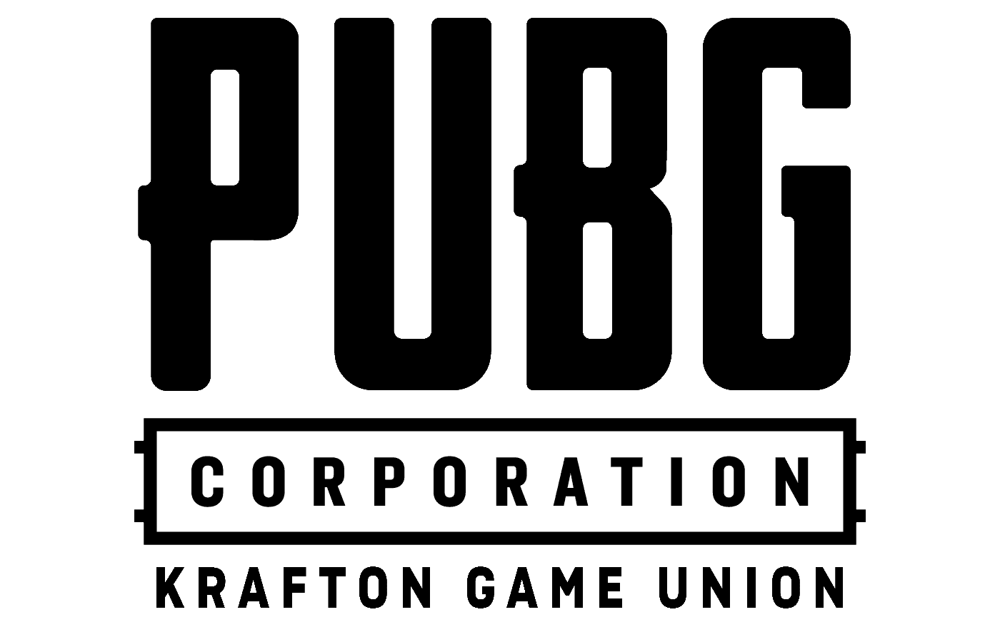
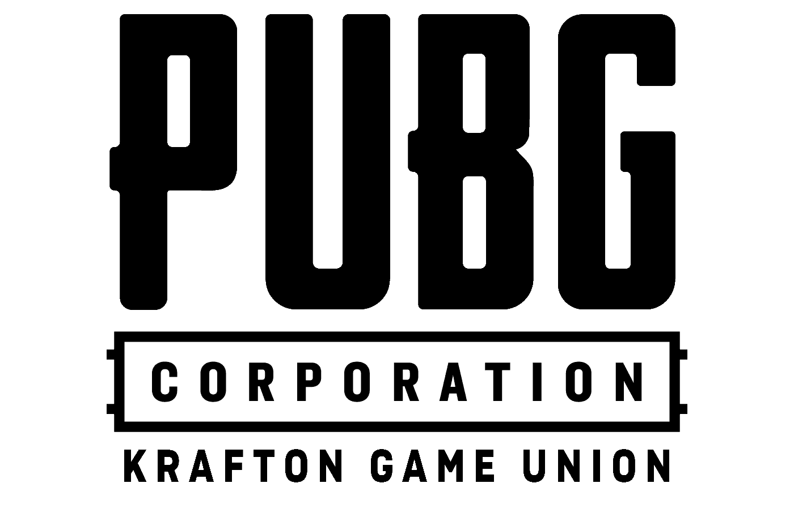
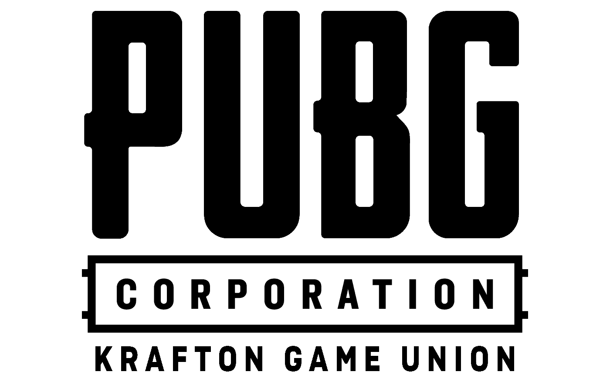

| Lunes | Martes | Miercoles | Jueves | Viernes | Sábado | Domingo | |
|---|---|---|---|---|---|---|---|
| Horas | Desde las 10am hasta las 2pm | Desde las 12am hasta las 4pm | No | Desde las 2pm hasta las 6pm | Desde las 10am hasta las 2pm | Desde las 3am hasta las 7pm | Desde las 10am hasta las 2pm |
PlayerUnknown's Battlegrounds (PUBG) es un excelente juego de batalla real desarrollado por la compañía Bluehole Inc.. Popularizó el juego de batalla real, donde una gran cantidad de jugadores caen en un mapa y compiten para ser la última persona o equipo. La jugabilidad de PUBG gira en torno a la búsqueda de armas, equipos y objetos, mientras se navega estratégicamente por un patio de recreo restringido. Los jugadores deben participar en combates, burlar a sus oponentes y sobrevivir hasta el final para conseguir la victoria. El circuito de torneos de PUBG opera principalmente a través de torneos regionales y globales como la PUBG Global Series (PGS). Equipos de todo el mundo participan en eventos organizados por PUBG Corporation, incluidos torneos, torneos y torneos independientes. El formato del torneo suele incluir equipos de cuatro jugadores, aunque los equipos más grandes y los torneos en solitario varían. El torneo consta de varias rondas con diferentes mapas y juegos, poniendo a prueba la adaptabilidad, el trabajo en equipo y las habilidades individuales de los jugadores.
